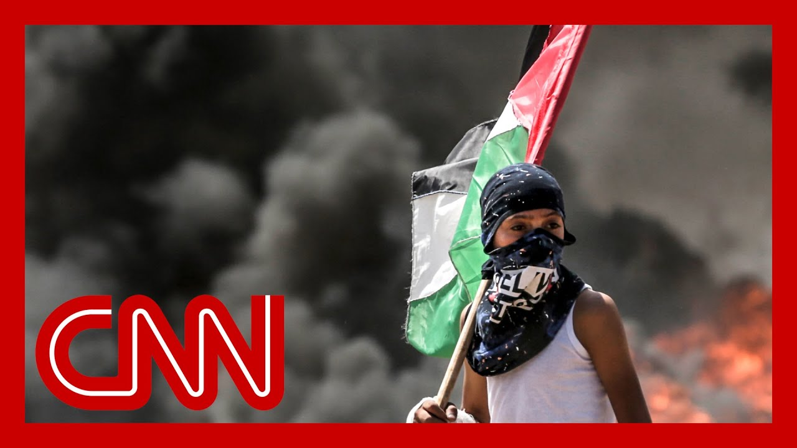

【加沙两分钟历史】
Summary: Gaza's small but fiercely contested land has seen centuries of conflict, from ancient battles to modern wars between Israel and Hamas, leaving its population trapped in violence.
摘要： 加沙虽小但争夺激烈，经历了从古代战争到现代以色列与哈马斯冲突的世纪纷争，民众深陷暴力之中。

⏱️ Estimated Reading Time: 3 min
Gaza is only about 25 miles long and seven miles wide.
加沙仅长约25英里，宽约7英里。
But this small strip of land is one of the most fought over in history.
但这片狭小的土地却是历史上争夺最激烈的地方之一。
It was an Egyptian base, a royal city for the Philistines and the place where the Hebrew hero, Samson, betrayed by Delilah, met his death.
它曾是埃及的基地、非利士人的王城，也是希伯来英雄参孙被黛利拉背叛后殒命之地。
Since then, much blood has been spilled.
自那时起，这里血流成河。
The most recent contest for Gaza began at the end of World War Two, when persecuted Jews traveled to Israel from Europe looking for a new start after the horrors of the Holocaust.
近代对加沙的争夺始于二战末期，受迫害的犹太人从欧洲前往以色列，寻求大屠杀后的新生活。
In 1947, the United Nations created a plan to split Palestine into two lands one for Jews and one for the Arab people.
1947年，联合国制定计划，将巴勒斯坦分为两部分，分别归属犹太人和阿拉伯人。
Backed by the U.S. President, Harry Truman.
该计划得到美国总统哈里·杜鲁门的支持。
David Ben-Gurion, Israel's founder, proclaims the establishment of the State of Israel in 1948.
以色列建国者戴维·本-古里安于1948年宣布以色列国成立。
Egypt then attacked Israel through the Gaza Strip.
随后，埃及通过加沙地带进攻以色列。
Israel was victorious, but Gaza remained under the control of Egypt, and an influx of Palestinian refugees began.
以色列获胜，但加沙仍由埃及控制，巴勒斯坦难民开始涌入。
In 1967, war broke out between Israel, Egypt, Jordan and Syria in what became known as the Six-Day War.
1967年，以色列、埃及、约旦和叙利亚爆发战争，即“六日战争”。
Israel seized the Gaza Strip and held it for 40 years.
以色列夺取加沙地带并控制了40年。
Israel pulled its forces out of Gaza in 2005.
2005年，以色列从加沙撤军。
In 2006, Hamas, a group sworn to destroy Israel and listed by the United States, the European Union and others as a terrorist group, won a landslide victory in Palestinian legislative elections.
2006年，哈马斯在巴勒斯坦立法选举中获胜，该组织誓言消灭以色列，并被美国、欧盟等列为恐怖组织。
Hamas was now in control of the territory.
哈马斯自此控制了该地区。
However, Israel still controls much of the areas access to and from the Gaza Strip.
然而，以色列仍控制着进出加沙地带的大部分通道。
Since then, Israel and Hamas have been exchanging blows.
此后，以色列与哈马斯冲突不断。
Israel maintains that Hamas is a violent terror organization.
以色列坚称哈马斯是暴力恐怖组织。
Hamas says that they represent an oppressed people being victimized by the Jewish state.
哈马斯称他们代表受犹太国家压迫的民众。
The international community continues to press for a cease in violence.
国际社会持续施压要求停止暴力。
But for now, the strip's population of 1.8 million people are trapped in the crossfire.
但如今，加沙180万民众仍深陷交火之中。